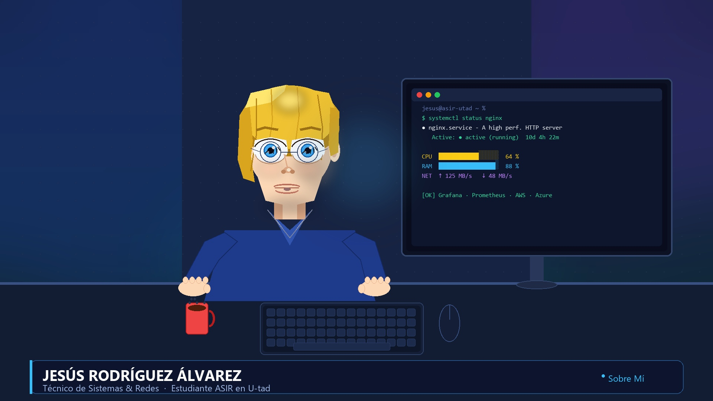

Trayectoria Profesional, Formación & Carta de Presentación de Jesús Rodríguez Álvarez

A quien corresponda,
Me dirijo a usted con gran entusiasmo para expresar mi interés en la oportunidad de unirme a su empresa, para la cual creo que mi formación e intereses encajan perfectamente. Les dejo adjuntado mi currículum para que puedan ver mis cualificaciones.
Como habrán podido ver, soy un estudiante del Ciclo Formativo de Grado Superior en Administración de Sistemas Informáticos en Red (ASIR), formación en la cual he aprendido a trabajar en entornos Windows y Linux, además de proveedores de servicios online como AWS o AZURE. Así como conocimientos en redes, virtualización, servicios de red, seguridad y resolución de incidencias.
A lo largo de mi formación he trabajado con tecnologías y herramientas habituales en entornos profesionales, como la gestión de usuarios y permisos, configuración de servidores, monitorización básica de sistemas, copias de seguridad y soporte técnico de primer nivel. Además, estoy acostumbrado a documentar procedimientos y a trabajar siguiendo buenas prácticas, algo que considero clave en el área de sistemas.
Me considero una persona flexible, con una gran capacidad para trabajar en equipo, responsable y dispuesta a aprender. Busco una oportunidad que me permita seguir formándome a nivel profesional y que me muestre una visión realista de cómo funciona un equipo de administración de sistemas. Es por eso que me gustaría que se me diera la oportunidad de ser entrevistado para este puesto, ya que creo que esta empresa es ideal para cumplir esos objetivos.
Agradezco sinceramente el tiempo y atención dedicada a mi persona y espero tener la oportunidad de hablar con usted próximamente.
Atentamente,
Jesús Rodríguez Álvarez
Técnico de Sistemas
U-tad | Centro Universitario de Tecnología y Arte Digital (2025 - 2027)
Especialización en sistemas Linux y Windows, infraestructuras de red, servicios web, bases de datos relacionales y tecnologías cloud (AWS & Azure).
Prácticas en U-tad — Proyecto "Radio U-tad": Integración en el departamento de métricas, trabajando con Grafana y Prometheus para generar y analizar paneles de rendimiento en tiempo real (CPU, RAM, red, almacenamiento) de los distintos servidores de la infraestructura.
IES Carmen Conde (2019 - 2021)
Modalidad Científico-Tecnológica con sólida base en matemáticas y tecnología.
CCST IT Support — Cisco Systems
CCST Networking — Cisco Systems
Certificación en gestión y diseño de Bases de Datos
Acreditación Oficial de Fundamentos en la Nube de Microsoft
Formación especializada de 20 horas en aplicaciones de IA Generativa